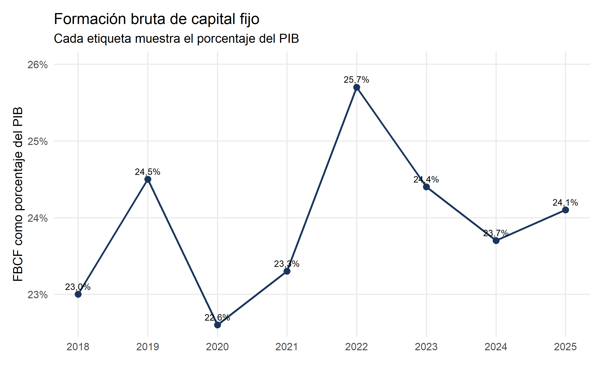
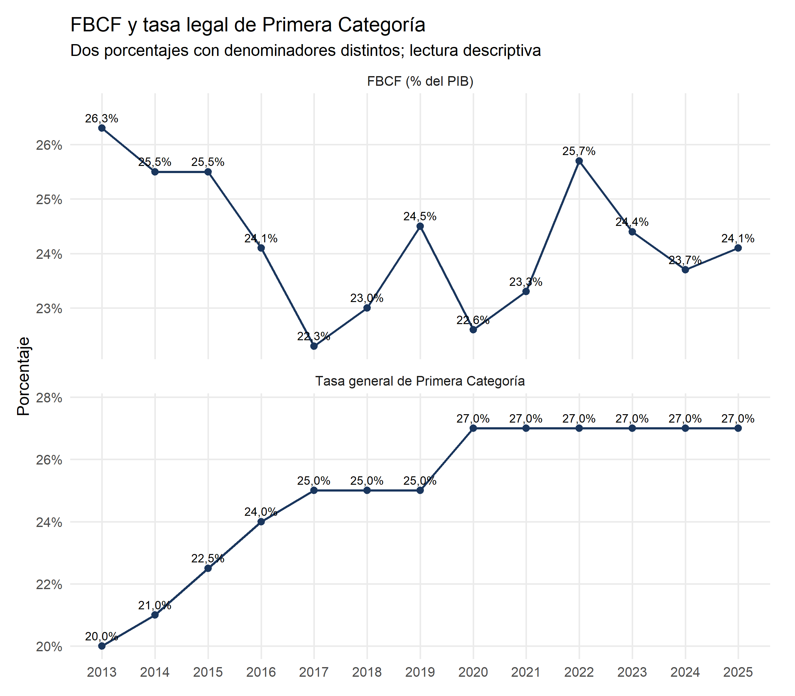

¿Qué proporción del PIB representa la inversión en activos fijos antes del plan? El anuncio de abril contempla estabilidad tributaria para proyectos de inversión. Esta serie ofrece contexto macroeconómico, no una estimación del efecto de ese incentivo. Fuente del anuncio.
Conceptos para leer esta página
Formación bruta de capital fijo (FBCF): inversión en activos que se usan para producir, como maquinaria, construcciones y equipos.
FBCF/PIB: peso de esa inversión dentro del tamaño anual de la economía; no es una tasa de crecimiento real.
Precios corrientes: valores calculados con los precios de cada año. Por eso una variación puede reflejar cantidades, precios o ambos.
Tasa legal de Primera Categoría: porcentaje establecido por ley para ese impuesto en el régimen general; no equivale a la tasa que efectivamente paga cada empresa.
En 2025, la formación bruta de capital fijo equivale a 24,1% del PIB, frente a 23,7% en 2024. La diferencia es en puntos porcentuales del PIB, no una tasa de crecimiento real de la inversión.
Formación bruta de capital fijo / PIB
Código
# FBCF anual: cada etiqueta muestra el porcentaje del PIB.g_fbcf <- d |>mutate(etiqueta=paste0(n(fbcf_pct_pib,1),'%'))print(ggplot(g_fbcf,aes(anio,fbcf_pct_pib))+geom_line(colour=paleta[1],linewidth=.9)+geom_point(colour=paleta[1],size=2.5)+geom_text(aes(label=etiqueta),vjust=-.7,size=3)+scale_x_continuous(breaks=2018:2025)+scale_y_continuous(labels=scales::label_number(suffix='%',decimal.mark=','),expand=expansion(mult=c(.05,.15)))+labs(title='Formación bruta de capital fijo',subtitle='Cada etiqueta muestra el porcentaje del PIB',x=NULL,y='FBCF como porcentaje del PIB'))

Fuente: Banco Central, agregados de inversión en relación al PIB, referencia 2018. Precios corrientes.
Cómo leer el gráfico. La FBCF representó 23,0% del PIB en 2018, alcanzó 25,7% en 2022 y llegó a 24,1% en 2025. La serie muestra cuánto pesa la inversión en activos fijos dentro de la economía, pero una variación del cociente puede provenir de la FBCF, del PIB o de los precios de ambos; no equivale directamente al crecimiento real de la inversión.
Tasa legal e inversión física
La FBCF no es una medida incluida literalmente en el plan. Se usa como contexto para las medidas de incentivo a la inversión, entre ellas la reducción gradual del impuesto corporativo y la invariabilidad tributaria para ciertas inversiones. La tasa corresponde al Impuesto de Primera Categoría; desde 2017 coexistieron regímenes, por lo que el gráfico muestra la tasa general en un panel separado.
Código
# Comparación de series: dos paneles para no confundir porcentajes de distinta naturaleza.serie_cruce <- cruce |>select(anio,`FBCF (% del PIB)`=fbcf_pct_pib,`Tasa general de Primera Categoría`=tasa_general_pct) |>pivot_longer(-anio,names_to='indicador',values_to='porcentaje') |>mutate(etiqueta=paste0(n(porcentaje,1),'%'))print(ggplot(serie_cruce,aes(anio,porcentaje))+geom_line(colour=paleta[1],linewidth=.8)+geom_point(colour=paleta[1],size=2)+geom_text(aes(label=etiqueta),vjust=-.7,size=3)+facet_wrap(~indicador,ncol=1,scales='free_y')+scale_x_continuous(breaks=2013:2025)+scale_y_continuous(labels=scales::label_number(suffix='%',decimal.mark=','),expand=expansion(mult=c(.06,.16)))+labs(title='FBCF y tasa legal de Primera Categoría',subtitle='Dos porcentajes con denominadores distintos; lectura descriptiva',x=NULL,y='Porcentaje'))

Fuentes: Banco Central de Chile para FBCF y SII para tasas legales. Los paneles se mantienen separados porque los porcentajes usan denominadores distintos.
Cómo leer el gráfico. La tasa legal general subió gradualmente hasta 27% en 2020 y permaneció en ese nivel hasta 2025. Durante esos mismos años, la FBCF varió entre 22,6% y 25,7% del PIB. Que la inversión cambie mientras la tasa legal permanece igual muestra que no existe una relación mecánica de uno a uno: también influyen la actividad económica, el costo del financiamiento, la incertidumbre y otros factores.
Lectura y limitaciones
El indicador relaciona la adquisición de activos fijos con el tamaño de la economía. Una variación puede deberse a cambios de inversión, del PIB o de precios relativos; no identifica obstáculos regulatorios por sí sola.
Se usa la serie a precios corrientes y se evita mezclarla con la relación a precios del año anterior encadenados que también aparece en la tabla.
No es inversión extranjera directa ni ejecución presupuestaria. Es un agregado de la economía y no separa los proyectos alcanzados por el plan.
El HTML oficial guarda valores con un decimal. Se respeta esa precisión y no se presenta exactitud adicional ficticia.
Las cuentas nacionales están sujetas a revisiones. La descarga preserva la versión usada; no se atribuyen movimientos hasta 2025 a una propuesta de 2026.
Desde 2017 existen regímenes con tasas distintas. La comparación utiliza la tasa general y conserva las tasas alternativas en el archivo de datos; no construye un promedio no ponderado de regímenes.
Trece observaciones anuales no bastan para separar el rol de la tasa legal de cambios simultáneos en actividad, precios, incertidumbre, inversión pública o condiciones internacionales.
Preguntas que estos datos dejan abiertas
¿Qué proyectos serían elegibles, cuánto invertirían adicionalmente y cuál sería el costo tributario? Se necesitan expedientes, montos, plazos de permisos y una estrategia de comparación que separe el efecto del plan del ciclo económico y de otros determinantes de la inversión.
Datos y fuente
Cómo se construyó el Excel de cruce
El archivo impuesto_corporativo_fbcf.xlsx fue elaborado dentro de este proyecto y no corresponde a una publicación descargada de una institución. Se unieron por año la relación FBCF/PIB extraída de la tabla oficial del Banco Central y la tasa legal general de Primera Categoría publicada por el SII. También se conservaron las tasas alternativas y notas sobre los regímenes tributarios cuando correspondía. No se interpolaron años, no se promediaron tasas de regímenes distintos y no se estimó un efecto causal. El Excel funciona como copia de auditoría; los gráficos leen el CSV reproducible generado por R.